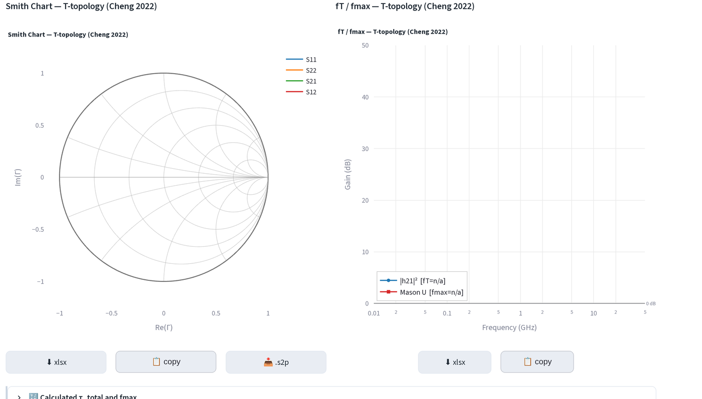
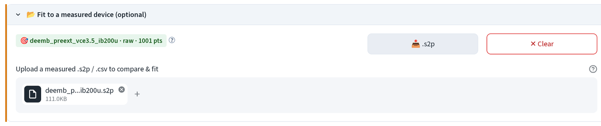
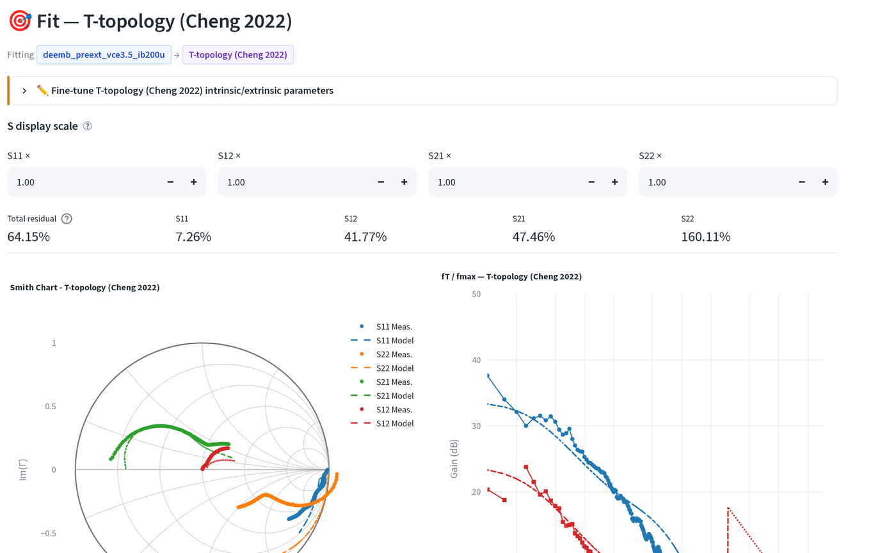
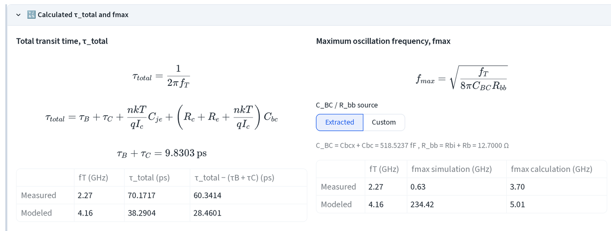
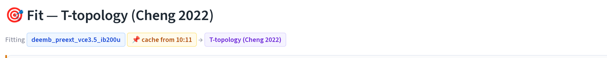

模擬與擬合¶
從零開始正向模擬任意小訊號拓樸，或載入量測 .s2p 並對其擬合。從側邊欄
開啟小訊號模型模擬與擬合 (SSM Simulation & Fitting)。
1. 選擇模型¶
- 在模型 (Model) 中點選一個選項。
- Cheng's T：Cheng (2022) 電流源 T 拓樸 HBT 模型，預設選項，與 SSM 萃取頁剝離的拓樸相同。
- Cheng's π：Cheng (2022) hybrid-π HBT 模型，焊墊/接觸網路與 T 拓樸 相同，本質核心不同。
- Xu T：Xu (2014) T 拓樸 HBT。沒有外質 Cbex；一個並聯 Rbcx 橫跨在 Cbcx 兩端（預設 285 kΩ，Rbcx 從不由量測資料萃取，只能手動調整）。
- Kun-Yang HEMT：π 拓樸 HEMT，僅供正向模擬（不提供剝離萃取）。在源極 側加入 R_delay∥C_delay 支路，並以自訂基板焊墊網路取代 HBT 的 Cpbe/Cpce/Cpbc。
- 🧩 自訂模型 (🧩 Custom model)：建立並模擬自己的網表。另有專頁說明： 自訂模型。
- 開路與短路焊墊 (Open and Short Pad)：模擬校準用的 dummy 本身 （僅焊墊電容/引線電感），而非元件。適合單獨檢查去嵌入用的一組標準。
2. 未載入量測資料時的正向模擬¶
未上傳檔案時，每個參數起始值都是 0，Smith 圖只是 Γ = 1 處的一個點，
fT/fmax 顯示 n/a。在上方的 Inputs 面板輸入數值（或將其
Editor mode 切換為 Diagram，在示意圖上直接設定數值），即可看到
真正的曲線。

不論選擇哪個模型晶片，都是同一個正向模擬器：輸入數值，讀出 Smith 圖與
fT/fmax 的 Bode 圖。模型輸入上方的 Start Frequency、Data Points
與 Final Frequency 設定掃描範圍（載入量測檔案後會隱藏，見下文）。
3. 擬合量測元件¶
- 開啟 📂 擬合至量測元件（選用） (📂 Fit to a measured device
(optional))，拖入
.s2p或.csv檔案。

頻率軸現在會逐點跟隨上傳的檔案，手動的 Start/Final Frequency 輸入欄會
消失。傳送去嵌入後的元件（不含 Cpxx/Lx）只擬合本質元件；傳送原始
元件則連寄生效應一併擬合。從 RF 一覽的單一檔案分頁點選
→ 模擬與擬合 (→ Simulation & Fitting)，也是以同樣方式傳送元件，
見下方的交接內容。
- 頁面會切換為擬合模式：一個 Fine-tune 展開區，每個模型參數各有 一個數值輸入欄，接著是殘差與圖表。

Total residual 是量測與模型 S 參數之間的均方根相對誤差，取四個埠的 平均值；S11/S12/S21/S22 各自列出細項，避免某一埠（此處 S22 為 160%， 四者中最差）擬合不佳卻被偏低的總值掩蓋。用視覺化或自動調諧 將其最小化。
4. fT/fmax、τ_total 與 fmax¶
不論正向模擬或擬合模式，fT/fmax 的 Bode 面板都位於 Smith 圖旁邊：實心 標記代表掃描模擬結果，虛線/點線代表超出量測頻段的外插（外插方法如何 選定，見RF 一覽）。
在圖表下方，🔣 Calculated τ_total and fmax 會展開教科書中的渡越時間 與 fmax 公式，並代入此次擬合的數值：

輸入 fmax 公式的 C_BC/R_bb 預設來自擬合出的 Cbcx+Cbc 與 Rbi+Rb，
切換為 Custom 可改為手動輸入。
5. 擬合快取¶
Fine-tune 中的每一次編輯，不論是手動輸入的值還是調諧 提交的結果，都會自動存入以（元件、模型）為鍵的磁碟快取。重新開啟同一個 元件並選用同一個模型時，會自動取回快取內容，並顯示在標題列：

除非剛從萃取頁收到新的交接資料，否則快取一律套用；新的交接內容 永遠優先於同一元件較舊的快取結果。
6. 什麼會隨交接一起帶過來¶
從 RF 一覽的單一檔案分頁點選 → 模擬與擬合 (→ Simulation & Fitting) （或從 SSM 萃取頁傳送模型），會帶著以下內容進入本頁：
- 元件的 S 參數已經載入，如同手動上傳一般；
- 對應的模型晶片已預先選好；
- 若傳送方本身有萃取值（來自萃取頁，而非原始的 RF 一覽元件）， Fine-tune 的每個欄位都會以該萃取結果為初始值，而不是上傳檔案時的自動 猜測預設值。
新的交接也會清除任何先前交接留下的殘餘初始值，因此切換元件時，不會 在你剛切換過去的模型上留下不相關的舊值。